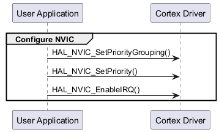
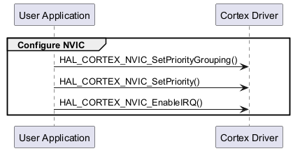
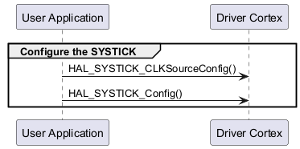
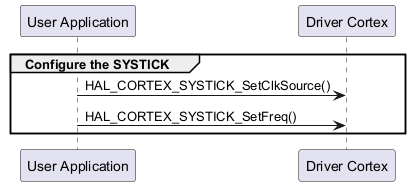
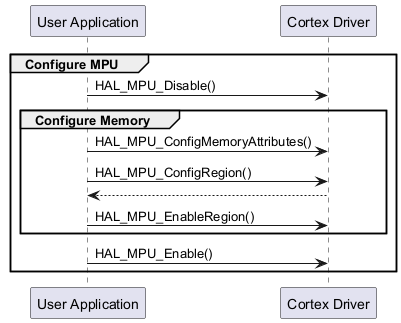
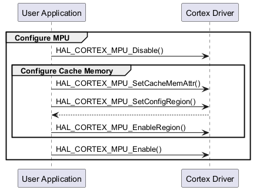
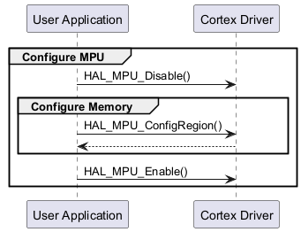
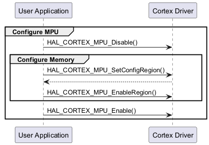

HAL CORTEX Typical use cases for migration ¶
NVIC set priority sequence ¶
These sequences demonstrate the change in the NVIC priority setting configuration.
|
HAL1 Sequence Diagrams |
HAL2 Sequence Diagrams |
|---|---|
|
 |
 |
NVIC set priority use case ¶
This use case demonstrates how to set a priority for a selected irq with NVIC functions using HAL1 compared to HAL2.
No changes except summary naming(functions and types):
|
HAL1 Example |
HAL2 Example |
|---|---|
HAL_NVIC_SetPriorityGrouping(NVIC_PRIORITYGROUP_0);
HAL_NVIC_SetPriority(EXTI2_IRQn, 8, 1);
HAL_NVIC_EnableIRQ(EXTI2_IRQn);
|
HAL_CORTEX_NVIC_SetPriorityGrouping(HAL_CORTEX_NVIC_PRIORITY_GROUP_0);
HAL_CORTEX_NVIC_SetPriority(EXTI2_IRQn,
HAL_CORTEX_NVIC_PREEMP_PRIORITY_8,
HAL_CORTEX_NVIC_SUB_PRIORITY_1);
HAL_CORTEX_NVIC_EnableIRQ(EXTI2_IRQn);
|
SYSTICK configuration sequence ¶
These sequences demonstrate the change in the SYSTICK configuration.
|
HAL1 Sequence Diagrams |
HAL2 Sequence Diagrams |
|---|---|
|
 |
 |
SYSTICK configuration use case ¶
This use case demonstrates how to configure the SYSTICK timer using HAL1 compared to HAL2.
In HAL2, the function HAL_CORTEX_SYSTICK_Config() has been renamed to HAL_CORTEX_SYSTICK_SetFreq(), which uses ticks_freq (expressed in frequency) instead of TicksNumb (expressed in time).
You can still change the clock source separately with HAL_CORTEX_SYSTICK_SetClockSource() as in HAL1.
|
HAL1 Example |
HAL2 Example |
|---|---|
HAL_SYSTICK_CLKSourceConfig(SYSTICK_CLKSOURCE_HCLK);
/* Fix the number of ticks between two interrupts */
TicksNumb = 1000;
uint32_t state = HAL_SYSTICK_Config(TicksNumb);
|
HAL_CORTEX_SYSTICK_SetClkSource(HAL_CORTEX_SYSTICK_CLKSOURCE_HCLK);
/* SysTick clock frequency is 1 MHz */
uint32_t SysTick_CLK = 1000000;
HAL_CORTEX_SYSTICK_SetFreq(uint32_t ticks_freq);
|
MPU memory attribute configuration sequence ¶
Note
This configuration is applicable with ARMv8-M Architectures or above.
These sequences demonstrate the change in the MPU configuration process.
The change is in the ConfigMemoryAttributes function level.
In HAL1, the type of the memory is passed inside the function.
In HAL2, the ConfigMemoryAttributes has been split into two separate functions, each one is assossiated to a specific memory type(Device, Cache).
|
HAL1 Sequence Diagrams |
HAL2 Sequence Diagrams |
|---|---|
|
 |
 |
MPU config use case ¶
This use case demonstrates how to configure a region of the memory(RAM for example) with read/write access with MPU using HAL1 compared to HAL2.
|
HAL1 Example |
HAL2 Example |
|---|---|
MPU_Region_InitTypeDef MPU_InitStruct;
MPU_Attributes_InitTypeDef MPU_AttributesInit;
/* Disable MPU */
HAL_MPU_Disable();
/* Define cacheable memory via MPU */
MPU_AttributesInit.Number = MPU_ATTRIBUTES_NUMBER1;
MPU_AttributesInit.Attributes = MPU_NOT_CACHEABLE;
HAL_MPU_ConfigMemoryAttributes(&MPU_AttributesInit);
/* Configure RAM region as Region Number 0, 256KB of size
and R/W region */
MPU_InitStruct.Enable = MPU_REGION_ENABLE;
MPU_InitStruct.BaseAddress = EXAMPLE_RAM_ADDRESS_START;
MPU_InitStruct.LimitAddress = EXAMPLE_RAM_ADDRESS_START
+ EXAMPLE_RAM_SIZE - 1;
MPU_InitStruct.AccessPermission = MPU_REGION_ALL_RW;
MPU_InitStruct.AttributesIndex = MPU_ATTRIBUTES_NUMBER1;
MPU_InitStruct.IsShareable = MPU_ACCESS_NOT_SHAREABLE;
MPU_InitStruct.Number = MPU_REGION_NUMBER0;
MPU_InitStruct.DisableExec = MPU_INSTRUCTION_ACCESS_ENABLE;
HAL_MPU_ConfigRegion(&MPU_InitStruct);
HAL_MPU_EnableRegion(MPU_REGION_NUMBER0);
HAL_MPU_Enable();
|
hal_cortex_mpu_region_config_t set_region;
/* Disable MPU before perloading and config update */
HAL_CORTEX_MPU_Disable();
/* Define cacheable memory via MPU */
HAL_CORTEX_MPU_SetDeviceMemAttr(HAL_CORTEX_MPU_MEM_ATTR_1,
HAL_CORTEX_MPU_NORMAL_MEM_NCACHEABLE);
/* Configure RAM region as Region Number 0, 256KB of size
and R/W region */
set_region.base_addr = EXAMPLE_RAM_ADDRESS_START;
set_region.limit_addr = EXAMPLE_RAM_ADDRESS_START
+ EXAMPLE_RAM_SIZE - 1;
set_region.access_attr = HAL_CORTEX_MPU_REGION_ALL_RW;
set_region.exec_attr = HAL_CORTEX_MPU_EXECUTION_ATTR_ENABLE;
set_region.attr_idx = ARRAY_ATTRIBUTE_NUMBER;
hal_status_t state = HAL_CORTEX_MPU_SetConfigRegion(HAL_CORTEX_MPU_REGION_0,
&set_region);
HAL_CORTEX_MPU_EnableRegion (HAL_CORTEX_MPU_REGION_0);
HAL_CORTEX_MPU_Enable();
|
MPU memory configuration sequence ¶
Note
This configuration is applicable with ARMv7-M & ARMv6-M Architectures.
|
HAL1 Sequence Diagrams |
HAL2 Sequence Diagrams |
|---|---|
|
 |
 |
MPU config use case ¶
This use case demonstrates how to configure a region of the memory(RAM for example) with read/write access with MPU using HAL1 compared to HAL2.
|
HAL1 Example |
HAL2 Example |
|---|---|
MPU_Region_InitTypeDef MPU_InitStruct;
/* Disable MPU */
HAL_MPU_Disable();
/* Configure RAM region as Region Number 0, 64KB of size and
Read only in privileged mode */
MPU_InitStruct.Enable = MPU_REGION_ENABLE;
MPU_InitStruct.BaseAddress = EXAMPLE_RAM_ADDRESS_START;
MPU_InitStruct.Size = MPU_REGION_SIZE_64KB;
MPU_InitStruct.AccessPermission = MPU_REGION_PRIV_RO;
MPU_InitStruct.IsBufferable = MPU_ACCESS_NOT_BUFFERABLE;
MPU_InitStruct.IsCacheable = MPU_ACCESS_NOT_CACHEABLE;
MPU_InitStruct.IsShareable = MPU_ACCESS_NOT_SHAREABLE;
MPU_InitStruct.Number = MPU_REGION_NUMBER0;
MPU_InitStruct.TypeExtField = MPU_TEX_LEVEL1;
MPU_InitStruct.SubRegionDisable = 0x00;
MPU_InitStruct.DisableExec = MPU_INSTRUCTION_ACCESS_ENABLE;
HAL_MPU_ConfigRegion(&MPU_InitStruct);
HAL_MPU_Enable();
|
hal_cortex_mpu_region_config_t set_region;
/* Disable MPU before perloading and config update */
HAL_CORTEX_MPU_Disable();
/* Configure RAM region as Region Number 0, 64KB of size
and Read only in privileged mode */
set_region.base_addr = EXAMPLE_RAM_ADDRESS_START;
set_region.size = HAL_CORTEX_MPU_REGION_SIZE_64KB;
set_region.access_attr = HAL_CORTEX_MPU_REGION_ALL_RW;
set_region.mem_attr = HAL_CORTEX_MPU_NORMAL_MEM_NSHAREABLE_NCACHEABLE
set_region.exec_attr = HAL_CORTEX_MPU_EXECUTION_ATTR_ENABLE;
set_region.sub_region = 0x00;
hal_status_t state = HAL_CORTEX_MPU_SetConfigRegion(HAL_CORTEX_MPU_REGION_0,
&set_region);
HAL_CORTEX_MPU_EnableRegion (HAL_CORTEX_MPU_REGION_0);
HAL_CORTEX_MPU_Enable();
|
Related examples in HAL2 ¶
|
Example Name |
Description |
|---|---|
|
example_hal_cortex_mpu |
This example presents the MPU feature, it configures a memory area as privileged read-only, and attempts to perform read and write operations in different modes. |